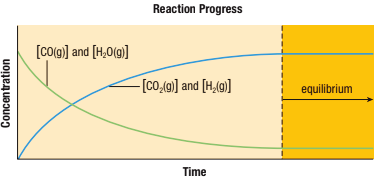

Chemical Equilibrium and Equilibrium Systems
Callout
Why is a chemical equilibrium always a dynamic equilibrium?
To answer this, consider the chemical reaction between steam, H2O(g), and carbon monoxide gas, CO(g), in a closed vessel at a high temperature. The balanced equation for this reaction is:
H2O(g) + CO(g) ➡ H2(g) + CO2(g)
Assume that we start with equal amounts of carbon monoxide gas and water vapor. From the balanced equation, we know these substances react in a 1:1 molar ratio. Therefore, if we start off with equal concentrations, the concentrations of these two gases will always be equal.
The picture below shows the changes in the concentrations of reactants and products of this reaction over time.

Determining Concentrations for Chemical Equilibria
For chemical equilibrium systems composed of aqueous solutions or gases, one strategy to perform stoichiometric calculations is to use an ICE table. In an ICE table, I stands for “initial” concentrations of reactants and products before the reaction, C for “change” in the concentrations of reactants and products from the start of the reaction to when equilibrium is achieved, and E for “equilibrium” concentrations of reactants and products.
.png)